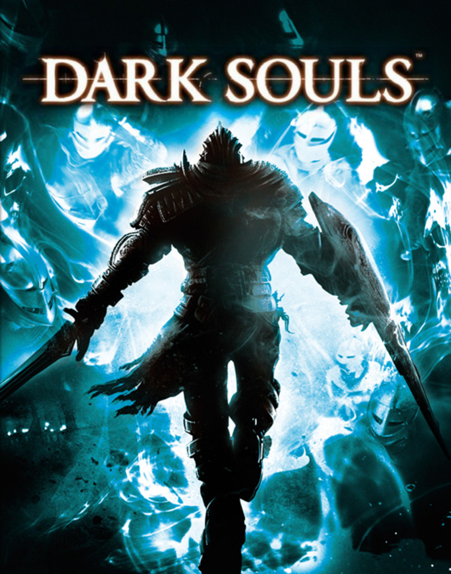

Dark Souls 1 |
||
|---|---|---|
|  | Sinopsis: El juego tiene lugar en los últimos días de la Edad de Fuego, la cual comenzó tras la derrota de los Dragones que anteriormente reinaban el mundo. Durante la Edad Antigua el mundo era un lugar oscuro y lúgubre habitado solamente por una raza inmortal de dragones gigantes cuya capacidad de prolongar su vida eternamente provenía de sus escamas. Así fue hasta que un grupo de seres descubrieron el poder de la Primera Llama, y siendo liderados por Gwyn, Señor de la Luz Solar acabaron con casi la totalidad de los dragones en una legendaria guerra que dio origen tras la derrota del bando reinante a la Edad de Fuego. Con la Edad de Fuego se dio la aparición de todos los seres vivos que se ven en Dark Souls, siendo éstos, a diferencia de los dragones, limitados en el tiempo, por lo que ningún ser que provenga de la llama es inmortal completamente, como si lo eran los casi desaparecidos dragones. |
Desarrollador:From Software Plataformas: PlayStation 3, Xbox 360, Microsoft Windows Año: 2011 Duracion:60 horas aprox Pais:Japon |
Criticas Profesionales:Alberto PastorUn RPG dificilísimo que propone unos retos tan enormes como la diversión que nos deparará cumpliéndolos. Un grandísimo e impactante videojuego de rol que, además, ha ampliado con gran tino su oferta jugable proponiendo uno de esos viajes al infierno que pocos olvidarán. |
Trailer |
Obtener:AlquilarComprar |
Registrate/Iniciar Sesion